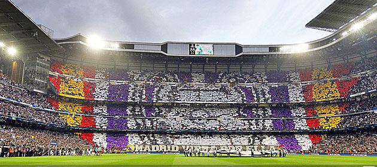

El Bernabéu sí remontó
Juan I. García-Ochoa 01/05/13 - 12:15.

El Real Madrid se quedó a un centímetro de conquistar el Everest, pero no se puede decir que fuera por falta de aliento. Porque la afición del equipo blanco, ayer sí, siguió al pie de la letra el manual de las remontadas. El Bernabéu fue una caldera y la hinchada empujó al equipo desde mucho antes de que empezara el partido. Eran las seis y media de la tarde y la calle Concha Espina estaba tomada por 7.000 aficionados que creían en la remontada. Un grito de guerra a la espera del autobús de los jugadores: “¡Sí, se puede!”.
a marea blanca era imparable y el bus del equipo, al filo de las siete y media, se quedó bloqueado ante la muchedumbre. Hasta los jugadores sacaron sus cámaras para grabar el momento, puede que usual en las grandes remontadas de los 80, pero inédito en la historia moderna del club madridista. El estadio se llenó mucho antes de lo normal y un speaker fichado para la ocasión caldeaba el ambiente. No hacía falta, en realidad, porque la afición sabía perfectamente lo que tenía que hacer: no parar de animar durante los 90 minutos.
Al contrario de lo que venía sucediendo últimamente, ayer eran los aficionados rivales los que sacaban sus cámaras para inmortalizar el espectáculo del Bernabéu. El ambiente no tenía nada que envidiar al del Westfallenstadion hace una semana.
Empezó el partido y jugadores y aficionados, de la mano, se comieron al Borussia durante los primeros 15 minutos. Una avalancha futbolística y atmosférica que se hubiera llevado por delante a cualquier equipo del mundo. El guion era el soñado por todos los aficionados… salvo porque falló lo que nunca falla: la pegada. Higuaín, Cristiano y Özil marraron tres mano a mano que jamás olvidarán los aficionados del Real Madrid. Porque cualquiera de estas tres ocasiones, convertidas en gol, podrían haber dado el pase al Real Madrid. Con esta sensación al menos se fue el aficionado a casa. Se llegó al descanso con el 0-0 y la afición siguió animando. Se llegó al 65’ con el 0-0 y el Bernabéu siguió apretando. Y sólo a partir del 75’ se empezaron a bajar los brazos y a ceder el protagonismo a los 4.000 hinchas del Borussia. Pero llegó el 83’ y el madridismo volvió a demostrar que cree en los milagros más que nadie. El 1-0 hizo creer en la remontada. Y el segundo gol casi echa abajo el estadio. La fe del Bernabéu parecía empujar al Madrid hacia una de las proezas más grandes de toda su historia, pero faltó el gol cumbre. Y no fue el de Juanito, que ese lo hizo Ramos, líder espiritual del equipo e inconmensurable toda la noche. Faltó el de Cristiano.